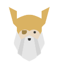

I am an undergradute student at NYU Tandon School of Engineering. Currently I am pursuing a dual-degree in mathematics and computer science along with a minor in cybersecurity. Within the school, I work as a TA for an Object Oriented Programming course and I am a grader for an upper level math elective. I also do outside work as a tutor throughout Manhattan and Brooklyn. Some of my other hobbies include violin, cooking, and video games.

A long term goal of mine is to complete the Odin Project in its entirety. Once more progress is made, a link to a page with all projects completed in this sequence will be made.